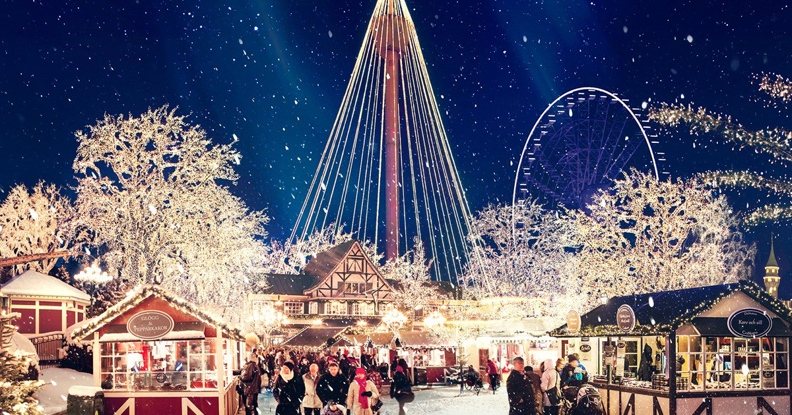
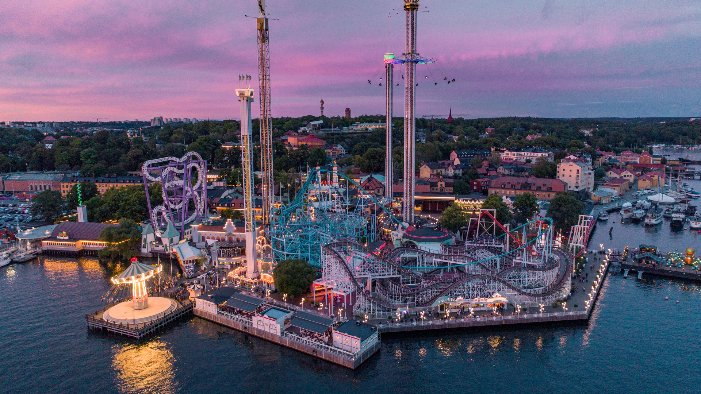
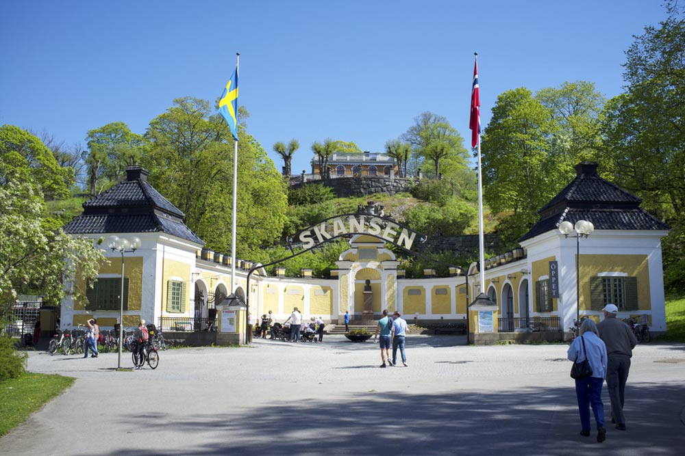
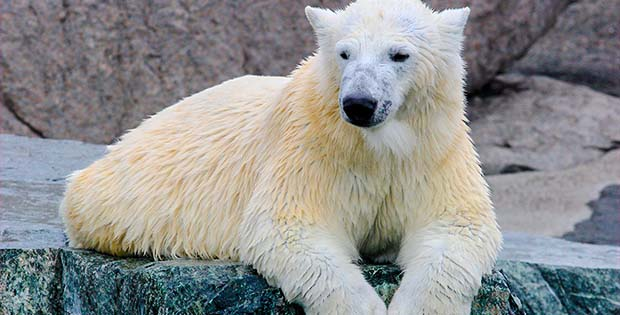

Top 5 Sweden's best theme parks
-
Liseberg
Sweden's and Nordens largest amusement park can be found in the district of Heden in central Gothenburg. With over 40 attractions and concerts and singing every Monday, it's hard not to find anything for everyone at Liseberg.
-
Gröna lund
Sweden's second best-known amusement park is old-fashioned Gröna Lund in Djurgården, Stockholm. Here are about 30 attractions on a relatively small area, which can make the crowds and queues in the most powerful team during the sunniest holiday days. But the environment is so unique and the view is so beautiful that it is worth popping up between families, tourists and all manner of teenage skis to taste one of Stockholm's most charming places. Throughout the summer there are also a host of high-performing artists on the big stage.
-
Skansen
Beautiful and cozy Skansen at Royal Djurgården in Stockholm is actually the world's first open-air museum. Here you can see most of our Swedish predators, visit the Skansen Aquarium (separate entrance) or bump into Lill-Skansen where the children can interact with the animals. Every Tuesday evening in the summer, it is also singing on the Soliden scene.
-
Kolmården

Kolmårdens animal park is one of Sweden's most popular tourist attractions with nearly half a million visitors each year. The old car saffron is exchanged for a world-wide cable car, but most popular is still the dolphin show seen by 98% of all visitors every year!
-
Orsa Björnpark
In Orsa you will find Europe's largest bear park where visitors are offered a unique opportunity to consider the animals in their natural environment. In the park there are besides a variety of domestic predators, Kamtjatkabjörnar, Siberian tigers, polar bears and leopards. Polar World is the world's largest polar bear plant, where you can see the great polar bears in a world-class environment.